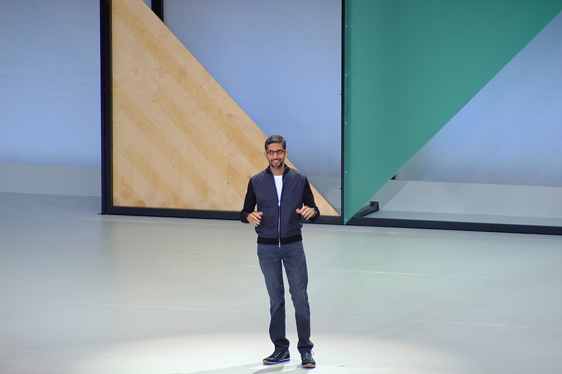

IIT Kharagpur
Studied Metallurgical Engineering and received an Institute Silver Medal.
INDIAFrom Chennai to the World — A Journey of Vision, Technology & Leadership.
An engineer who became one of the most influential leaders in the global technology industry, inspiring millions through curiosity, innovation and determination.
Explore His Journey
Sundar Pichai, born Pichai Sundararajan, is an Indian-born technology executive known for leading Google and its parent company, Alphabet.
Born in Madurai, Tamil Nadu, and raised in Chennai, his journey reflects how education, curiosity and dedication can open doors to opportunities across the world.
From studying engineering in India to taking leadership responsibilities at one of the world's most recognised technology companies, his career has been shaped by a deep connection with technology and product innovation.

A LEADER IN THE DIGITAL AGESundar Pichai was born on 10 June 1972 in Madurai, India, and spent his childhood in Chennai. Growing up in a middle-class family, he developed an early interest in technology and showed a strong curiosity about how things worked.
He studied Metallurgical Engineering at the Indian Institute of Technology Kharagpur, where he received an Institute Silver Medal. He later moved to the United States for further studies, earning a Master of Science degree from Stanford University and an MBA from the Wharton School of the University of Pennsylvania.
In 2004, Pichai joined Google. He contributed to products including Google Toolbar and Google Chrome, which became important parts of the company's product ecosystem. His responsibilities gradually expanded across several major Google products.
In August 2015, he became the CEO of Google. In December 2019, he also took on the role of CEO of Alphabet. His leadership has included guiding the company's work across products, cloud computing and artificial intelligence.
Every great journey begins with a foundation of learning and curiosity.
Studied Metallurgical Engineering and received an Institute Silver Medal.
INDIACompleted a Master of Science degree in Materials Science and Engineering.
UNITED STATESEarned an MBA from the University of Pennsylvania and was recognised as a Siebel Scholar and Palmer Scholar.
UNITED STATESKey moments that shaped his professional journey.
From developing popular Google products to guiding a global technology company, his career reflects the importance of product thinking and continuous innovation.
Born in Madurai, Tamil Nadu, and raised in Chennai, India.
Completed his undergraduate studies in Metallurgical Engineering.
Began his journey at Google and contributed to products such as Google Toolbar and Chrome.
Took responsibility for Android, expanding his role in Google's product leadership.
Was appointed Chief Executive Officer of Google.
Also became Chief Executive Officer of Alphabet, Google's parent company.
His career has been closely connected with products and technologies used by people around the world.
Contributed to the development and growth of Google's web browser, which became a major part of its product ecosystem.
Led Android and helped guide the development of Google's mobile technology ecosystem.
Held leadership responsibilities across products and services used by people and organisations globally.
Guides Google's work in artificial intelligence and its integration across products and services.
When you have the choice to work on something hard — say yes.Stanford Commencement Address, 2026
His journey reminds us that curiosity, continuous learning and determination can create opportunities beyond what we imagine.
BACK TO TOP ↑